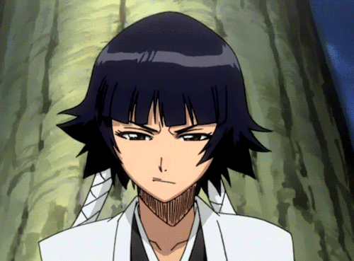

SOI FON
Soi Fon (ou Suì-Fēng) é a capitã da 2ª Divisão do Gotei 13 e
comandante da Organização de Execuções Secretas
(Onmitsukidō) em Bleach. Ela é uma personagem leal, disciplinada e extremamente dedicada à sua
missão e deveres como uma
líder militar. Soi Fon é uma lutadora ágil e especializada em combate furtivo e assassino,
refletindo seu papel como
chefe da Onmitsukidō.
Nascida em uma família nobre menor, Soi Fon sempre idolizou sua antiga comandante e mentora,Yoruichi
Shihōin, desenvolvendo um laço profundo com ela. No entanto, quando Yoruichi abandonou a Soul
Society sem explicações, Soi Fon sentiu-se traída e passou a nutrir ressentimento, o que moldou
grande parte de sua motivação e personalidade.
SHIKAI
A Shikai de Soi Fon, chamada Suzumebachi (Vespa), reflete seu estilo de combate letal
e preciso. Quando ativada, a
Zanpakutou assume a forma de um pequeno estilete que se encaixa no dedo médio de sua mão direita,
semelhante a um ferrão
de vespa. Esse estilete é projetado para ataques rápidos e silenciosos, características essenciais para
o combate
furtivo e assassino, que Soi Fon domina como comandante da Onmitsukidō.
A principal habilidade da Shikai de Suzumebachi é o Nigeki Kessatsu (Morte em Dois Golpes).
Quando Soi Fon atinge um
oponente com Suzumebachi, um selo em forma de borboleta chamado Hōmonka (marca de vingança) aparece no
ponto de impacto.
Se Soi Fon conseguir atingir o mesmo lugar uma segunda vez, a vítima morre instantaneamente,
independentemente de sua
resistência ou força. Essa habilidade torna Soi Fon incrivelmente perigosa, especialmente em batalhas
onde ela pode se
mover rapidamente e atacar com precisão cirúrgica.
Essa técnica letal se encaixa perfeitamente no papel de Soi Fon como uma assassina, permitindo-lhe
derrotar seus
inimigos de forma rápida e eficiente. Além disso, a marca Hōmonka permanece no corpo do oponente até que
ela consiga
acertar o segundo golpe, forçando o inimigo a lutar constantemente na defensiva para evitar a morte
instantânea.
BANKAI
A Bankai de Soi Fon, chamada Jakuhō Raikōben (Gabardina de Vespa da Lança do
Trovão), é bastante diferente do estilo furtivo e preciso de sua Shikai e do combate ao qual Soi Fon
está acostumada. Ao ativar sua Bankai, a arma assume a
forma de um gigantesco lança-mísseis que cobre completamente o braço direito de Soi Fon.
Jakuhō Raikōben tem um poder de destruição massivo. Quando disparado, o míssil de sua Bankai cria
uma explosão
devastadora, capaz de obliterar completamente o inimigo e a área ao redor. O impacto da explosão é
tão poderoso que Soi
Fon precisa se afastar rapidamente e até usar uma armadura espiritual para se proteger dos danos
causados por sua
própria técnica.